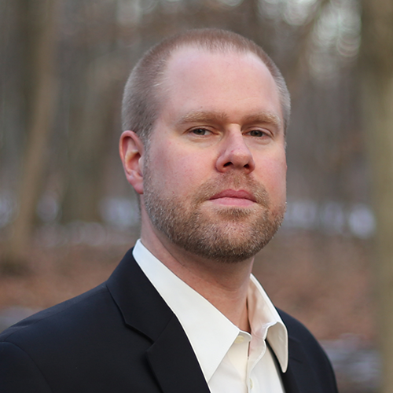

About
Who We Are
"We work collaboratively at the intersection of epistemic frames, producing deeply relational, feminist, environmental research-creation projects that are cross-disciplinary, cross-cultural, and cross-historical."
The Wildrose Collective is a team of award-winning scholars united by shared urgency: the polycrisis of the Anthropocene demands forms of knowing and making that exceed any single discipline. Our methodology is sited, grounded, and feminist — attending to the particular places, histories, and bodies that environmental crisis presses upon. We fuse poetics and physics, botany and data science, citizen science and critical theory, always in service of more just relations with the living world.
Supported by the Social Sciences and Humanities Research Council of Canada, our work spans VR installations, sound pieces, archival research, speculative fiction, interactive digital media, and peer-reviewed scholarship. We are committed to training the next generation of environmental humanities researchers while building durable public partnerships.
Affiliated institutions include Toronto Metropolitan University, Athabasca University, Ontario Tech University, University of Waterloo, York University, and the Canadian Research Knowledge Network.

Monique Tschofen
Co-Principal InvestigatorToronto Metropolitan University · English
Monique Tschofen is an interdisciplinary scholar whose work spans Canadian literature and culture, feminist and queer theory, environmental humanities, and digital media. She has developed award-winning research-creation projects at the intersection of technology, ecology, and art, and leads the Wildrose Collective's methodological innovations in feminist ecological research-creation.
Jolene Armstrong
Co-Principal InvestigatorAthabasca University · English
Jolene Armstrong researches Indigenous literature, environmental justice, and the intersections of colonialism and ecology in Northern Alberta. Her critical and creative practice draws on Indigenous methodologies to reframe dominant narratives about land, water, and community resilience. She guides cross-cultural and cross-historical dimensions of the research.

Angela Joosse
Partner CollaboratorCanadian Research Knowledge Network
Angela Joosse brings expertise in digital infrastructure, research dissemination, and open access to the Collective. She facilitates the team's connections with Canadian library and archival networks and oversees the long-term digital stewardship of the Collective's research outputs, ensuring broad and lasting public access to the work.

Hendrick de Haan
Co-InvestigatorOntario Tech University · Physics
Hendrick de Haan is a physicist whose research engages biophysics, complexity science, and the material dynamics of living systems. He brings rigorous quantitative and scientific methods to the Collective's interdisciplinary inquiries and contributes original sound work to research-creation projects, including Aquaphoria.
Mark Terry
Partner CollaboratorYork University / UN Youth Climate Report
Mark Terry is an award-winning filmmaker and educator whose documentary practice focuses on environmental storytelling and youth climate activism. His work has screened globally and been featured in UN Youth Climate initiatives. He leads moving-image and public-facing media projects within the Collective.
Lai-Tze Fan
Co-InvestigatorUniversity of Waterloo · CRC · Sociology
Lai-Tze Fan holds a Canada Research Chair and works at the intersection of digital humanities, platform studies, and critical data studies. Her research examines how digital technologies mediate cultural memory, environmental knowledge, and social inequality. She leads the Collective's digital humanities methodology and pedagogical training.
Inventing and testing new aesthetic and expressive forms — sound, AR/VR, immersive installations — that make pressing symptoms of the Anthropocene open to deep consideration.
Marrying historical and ecological analysis with artistic experimentation, theorizing how sited feminist ecological research-creation generates radical insight in times of emergency.
Working closely with HQP to cultivate professional interdisciplinary skills in environmental humanities, research-creation, and digital stewardship.
Building lasting partnerships among Canadian universities, cultural institutions, archives, and global networks while demonstrating the value of the humanities for engaging with environmental crisis.